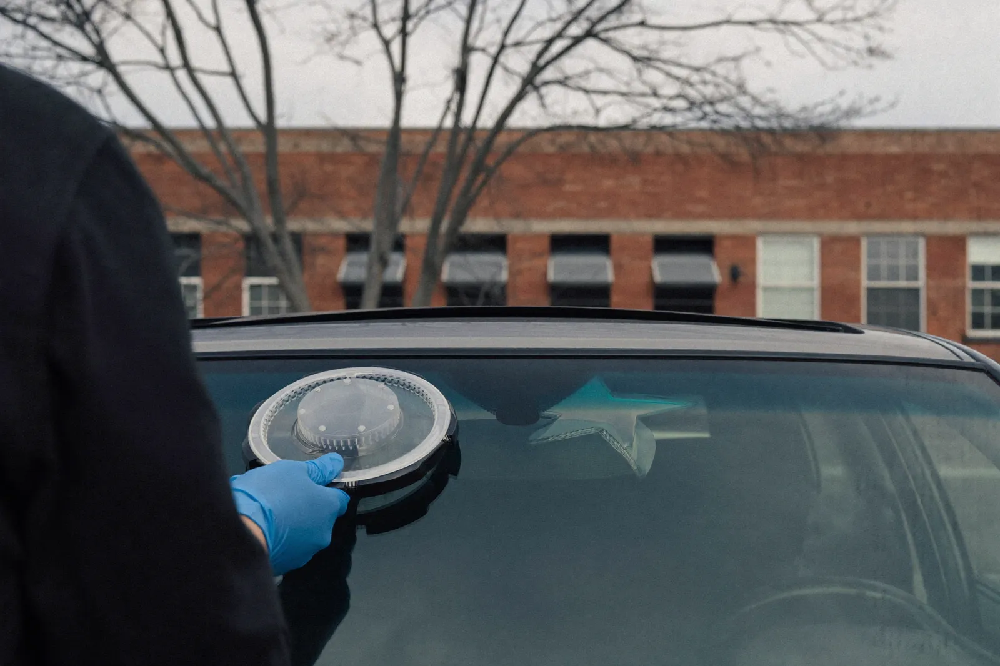

Thirty minutes in your driveway, and the chip stops spreading for good. Catch it early and you never need the glass replaced at all.
Tell us the vehicle and what happened. We reply with a real number — recalibration included, no second invoice.
Prefer to talk? Call (351) 900-7501 — fastest way to get an answer.

Windshield chip repair in Haverhill fills stone damage with clear resin so it stops spreading and mostly vanishes. It costs a fraction of new glass, takes about half an hour at your address, and keeps the factory seal in your car. The catch is timing — a chip is repairable for a window of weeks, not forever.
A stone chip is not just a mark on the surface. It is a small cone of fractured glass with air trapped inside, and that trapped air is what makes the damage visible.
We mount a sealed injector bridge over the impact point and pull a vacuum to draw the air out of every branch of the fracture. Then the pressure reverses and clear acrylic resin is pushed into the space the air came from.
Once the resin has worked its way into the fine legs of the break, an ultraviolet lamp cures it hard. The surface is scraped flush and polished. What is left is a faint mark you have to look for, and glass that is structurally whole again.
The moment you notice it. That sounds like a sales line, so here is the actual reasoning: a repairable chip and an unrepairable one are separated by size, contamination, and luck, and all three get worse with time.
You are a candidate if the chip is roughly quarter‑sized or smaller, there is one impact point rather than a spider of several, the damage sits outside the area your wipers sweep directly ahead of the driver, and it happened recently enough that road grime and water have not worked into the break.
Short single cracks up to about three inches are often repairable too. Past that, and especially once a crack touches the edge of the glass, you are into windshield replacement territory.
Because a windshield is a sandwich. Two layers of glass bonded to a plastic interlayer, and those layers do not expand and contract at exactly the same rate when the temperature changes.
Any existing chip is a stress concentration — the weakest point in the panel. Warm the inside face fast while the outside stays frozen and the difference has to go somewhere. It goes into the flaw, and the flaw runs.
Haverhill is a near‑perfect environment for this. Winter mornings in the single digits, defrosters on full, roughly 35 inches of snow a year, and a freeze‑thaw cycle that repeats all season. The chip you picked up behind a sanding truck on Route 125 in December is under stress every single morning until it fails.
There is a second, blunter cause: potholes. Hitting one flexes the whole body shell, and that flex passes straight through a windshield that is bonded to it.
| Factor | Effect on price |
|---|---|
| Single chip | $60–$150 depending on size and complexity |
| Additional chips, same visit | Usually discounted — the trip is already made |
| Short crack rather than a chip | Toward the upper end; takes longer to fill evenly |
| Age of the damage | Old, dirty chips take more work and finish less cleanly |
| Insurance | Many comprehensive policies cover repair with little or no out‑of‑pocket |
Worth knowing: insurers generally prefer paying for a repair over a replacement, because a $100 repair today avoids a $700 claim in February. That is why glass repair is frequently covered on favourable terms — check your comprehensive coverage before assuming you are paying cash.
Take a Haverhill driver who picks up a quarter‑sized chip in early December.
Repaired that week, it is a half‑hour appointment in the $60 to $150 range, the factory glass and factory seal stay in the car, and there is nothing to recalibrate.
Left alone, that chip runs out into a crack across the driver’s view sometime in January. Now it is a replacement: $250 to $500 without a camera, or $550 to $1,050 once ADAS recalibration is required. The original factory bond is gone, and the car may fail inspection in the meantime.
Same piece of damage, ten times the money, purely because of when it was dealt with. That is the whole argument for calling early.
About 30 minutes for a single chip, start to finish, including the ultraviolet cure. You can drive immediately afterwards because nothing structural has been disturbed and there is no adhesive that needs to set. It is genuinely a job that fits into a lunch break in a Haverhill parking lot.
It will improve a great deal but not vanish entirely. Filling the break with resin restores the glass strength and removes most of the visible white scatter, leaving a small mark you can usually find if you look for it at an angle. Anyone who promises an invisible result is setting you up to be disappointed.
Often, yes, though it is worth having us look. Once a chip has been open through a Haverhill winter, road salt, grit, and water have worked into the fracture, and contamination stops the resin bonding cleanly to the glass. An old chip can sometimes be stabilised so it does not spread further, but the cosmetic result will be poorer than a fresh repair.
We can, but we usually advise against it. Every resin repair leaves a slight distortion, and putting that distortion directly in your primary sightline is a poor trade even though the glass is technically sound. Massachusetts inspection also scrutinises damage in the wiper‑sweep area far more strictly, so a repair there may still leave you with a problem at the inspection bay.
A properly repaired chip outside the critical viewing area generally passes without issue, since the fracture has been filled and stabilised. Damage inside the wiper‑sweep area in front of the driver is judged more harshly, and a bruise larger than an inch there is a defined failure item whether or not it has been filled. If your sticker is due soon, mention it when you call and we will tell you honestly whether a repair gets you through.
Tell us roughly how big the chip is and where it sits on the glass. We will tell you straight away whether it is repairable — and if it is, we can usually be out within a day or two.
Call (351) 900-7501 Now